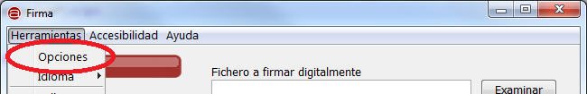
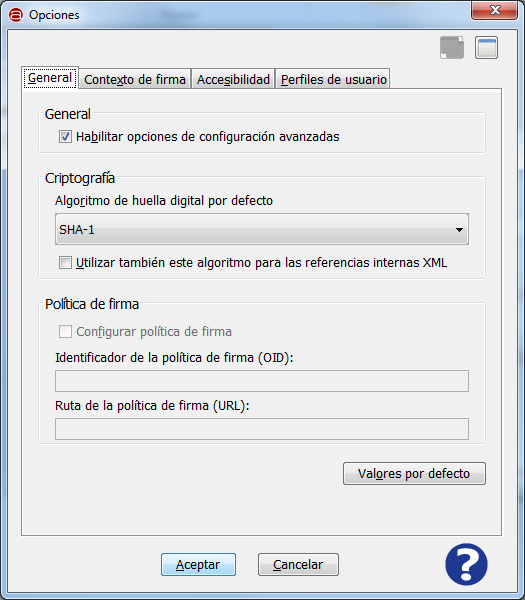
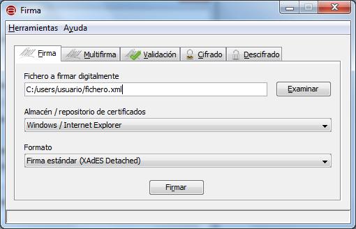

Es posible acceder a las opciones de configuración de la Interfaz de Escritorio del Cliente @firma mediante por medio del
elemento "Opciones del menú "Herramientas".

La pantalla de Opciones presenta, en concreto, 2 pestañas con las distintas opciones de configuración.
General

Los elementos disponibles en esta pantalla son:
- General:
- Habilitar opciones de configuración avanzadas: Esta opción habilita la vista avanzada de la Interfaz de Escritorio.
- Tecla de acceso rápido: b
- Criptografía:
- Algoritmo de huella digital por defecto: Es el algoritmo que se debe utilizar para ejecutar las firmas electrónicas.
Por defecto se utilizará SHA-1 (SHA1withRSA). No se recomienda modificar este valor salvo que se esté seguro que el formato de
firmas y el almacén de certificados que se desea utilizar soportan este algoritmo.
- Tecla de acceso rápido: r
- Utilizar también este algoritmo para las referencias internas XML: Esta opción permite que las referencias internas
de las firmas XML se realicen con el algoritmo seleccionado.
- Tecla de acceso rápido: u
- Política de firma: (Desactivado en la actual versión)
- Configurar política de firma (OID): Habilita la generación de firmas EPES.
- Identificador de la política de firma: Identificador de la política.
- Ruta de la política de firma (URL): Ruta de la versión legible de la política.
- Valores por defecto: Establece los valores por defecto para esta pestaña de configuración.
Contexto de firma

Los elementos disponibles en esta pantalla son:
- Firmas de documentos PDF:
- Motivo / razón de la firma electrónica: Establece el motivo asociado a las firmas PDF que se generen.
- Lugar donde se realiza la firma electrónica: Establece la localización asociada a las firmas PDF que se generen.
- Datos de contacto del firmante: Establece la información de contacto de quien genera la firma PDF.
- Valores por defecto: Establece los valores por defecto para esta pestaña de configuración.
Al pulsar el icono de ayuda se muestra la ventana de ayuda para el menú "Opciones de configuración".
- Tecla de acceso rápido para el botón de Ayuda: h